先見環境，再築未來。
RSA 是什麼
Responsive · 回應
因地制宜，理解氣候、建築周邊環境與使用者需求。
Space · 空間
涵蓋基地、住宅、公共空間、生活體驗與人本設計。
Architecture · 建築
讓專業設計與科學分析，形成連續的工作方法。
RSA 以建築與空間設計思維為出發點，結合基地環境分析、數位模擬與自主軟體研發。我們關注空間如何回應日照、風、熱環境與人的需求，並嘗試把複雜的環境資訊，轉化為可理解、可追溯的設計證據。
RSA 是公司品牌；Residential Site Analyzer 是我們研發中的住宅基地環境分析平台。
一塊基地的日照、鄰棟、熱環境與人的習慣，往往比一張透視圖更早決定空間的品質。
好的建築不應只從形式開始，而應從理解它所處的環境開始。RSA 承接創辦人的空間設計訓練與住宅開發經歷，把設計過程中常見、卻難以回答的環境問題，轉化為研究與技術開發的方向。
設計前期能否更清楚地理解基地？不同樓層、時間與量體的差異如何呈現？分析結果能否以非工程背景也能理解的方式傳達，並實際改善設計選擇？
專業領域
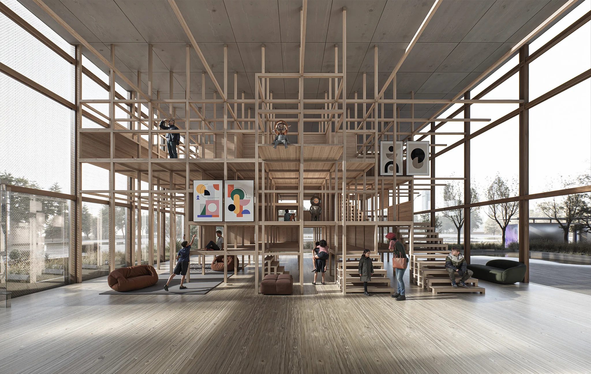
DRSA Design · 設計研究
不只設計建築，也重新思考空間與生活。
建築與空間概念、基地配置與量體、住宅前期規劃、立面與材料策略、3D 設計視覺化——以創辦人的學術作品與住宅實務為基礎。
- 建築與空間概念
- 基地配置與量體
- 住宅前期規劃
- 立面與材料策略
- 設計視覺化
創辦人經歷。RSA 不提供依法須由建築師執行之簽證業務。
ERSA Environment · 環境分析
讓看不見的環境條件，成為看得懂的設計依據。
創辦人的作品早於 RSA，並未使用 RSA 分析。以下是另行研發的研究原型 Residential Site Analyzer。
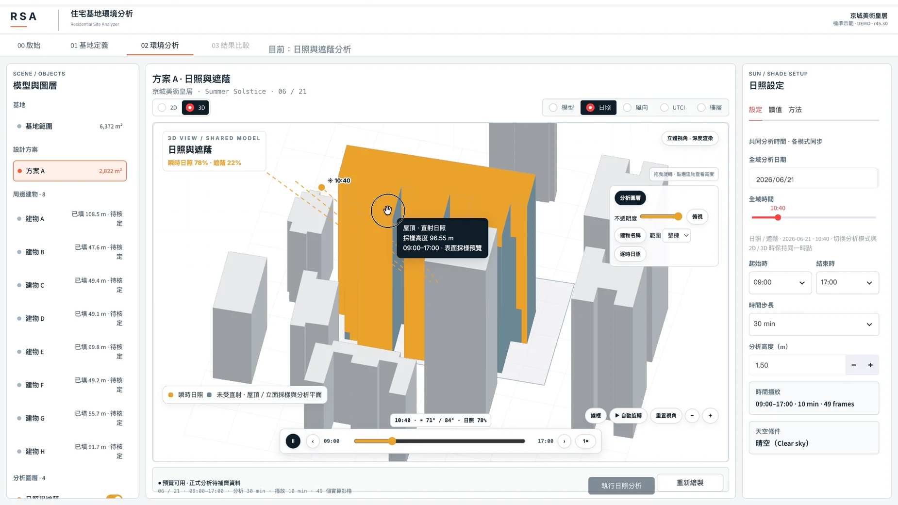
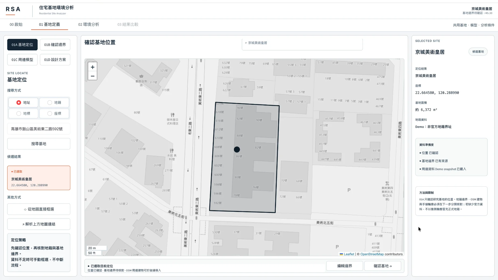
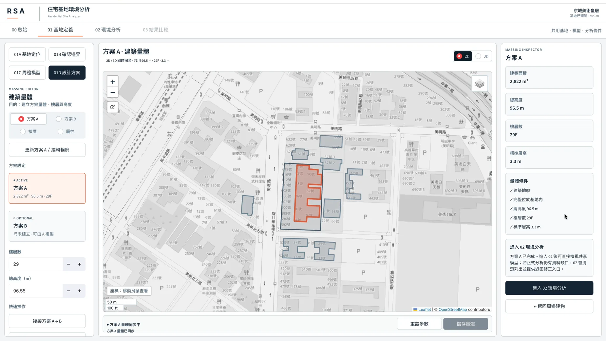
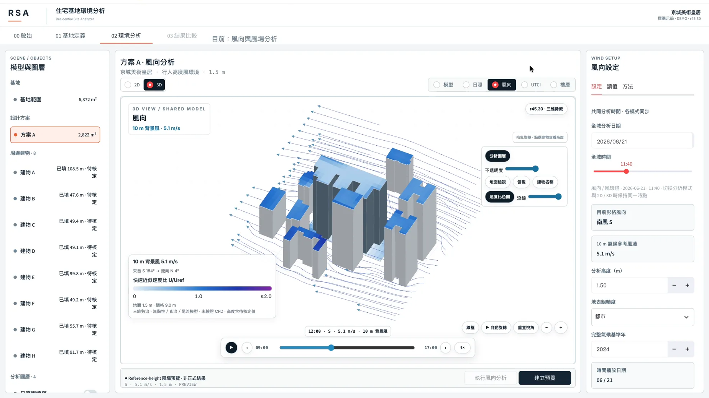
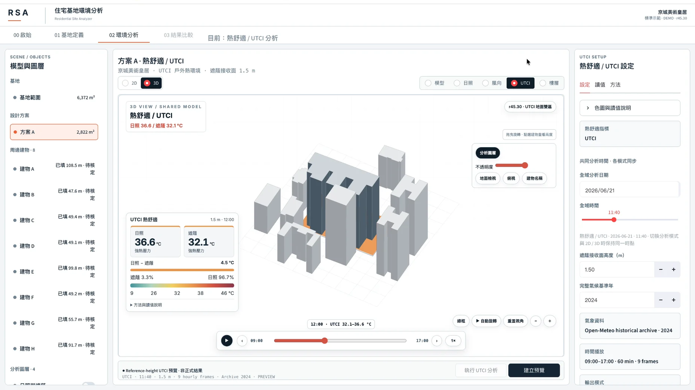
原型目前探索的內容。每個模組都依實際進度標示狀態。
- M1基地脈絡真實地圖上的基地與周邊
- M2建築量體真實目標建物、鄰棟與 A/B 方案
- M3日照／遮蔭真實依時間與樓層的陰影研究
- M4風環境探索中風向預覽 — 非 CFD
- M5UTCI 熱舒適探索中研究性視覺化，揭露輸入與限制
TRSA Technology · 軟體與 AI
從設計問題出發，打造能解釋環境的工具。
AI 只能整理與解釋有來源的分析證據；不憑空產生結果，也不取代物理模擬。
Residential Site Analyzer
Python／Streamlit 研究原型：基地、量體、日照遮蔭、風向預覽與 UTCI 導向熱舒適。
RSA Studio
A/B 設計、跨樓層與時序比較、決策視覺化與報告摘要。
RSA Intelligence
以 Claude API 等大型語言模型，提供有來源依據的結果解讀，並由人工審查。
先有作品，才有問題。
學術設計與住宅專案，是這些問題的來源。每件作品都依實際作者與角色標示。均非 RSA 承攬案，也未使用 RSA 分析。
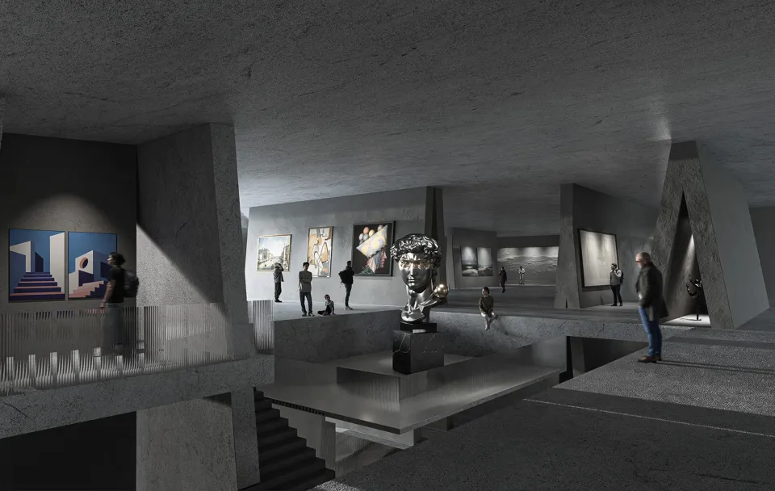
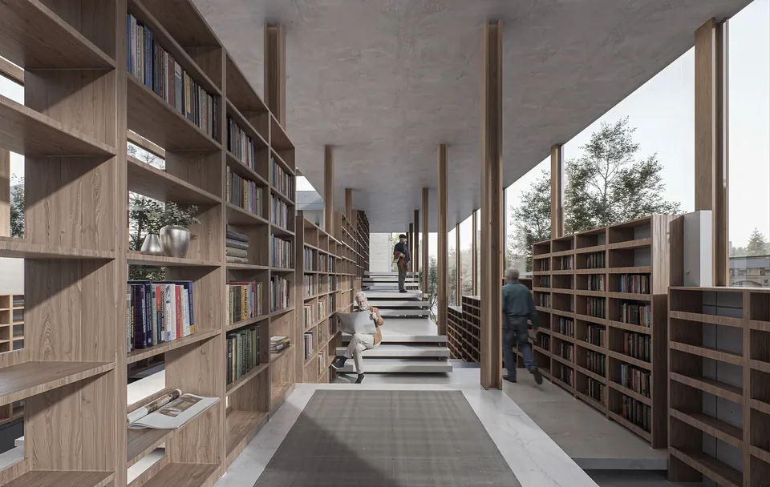
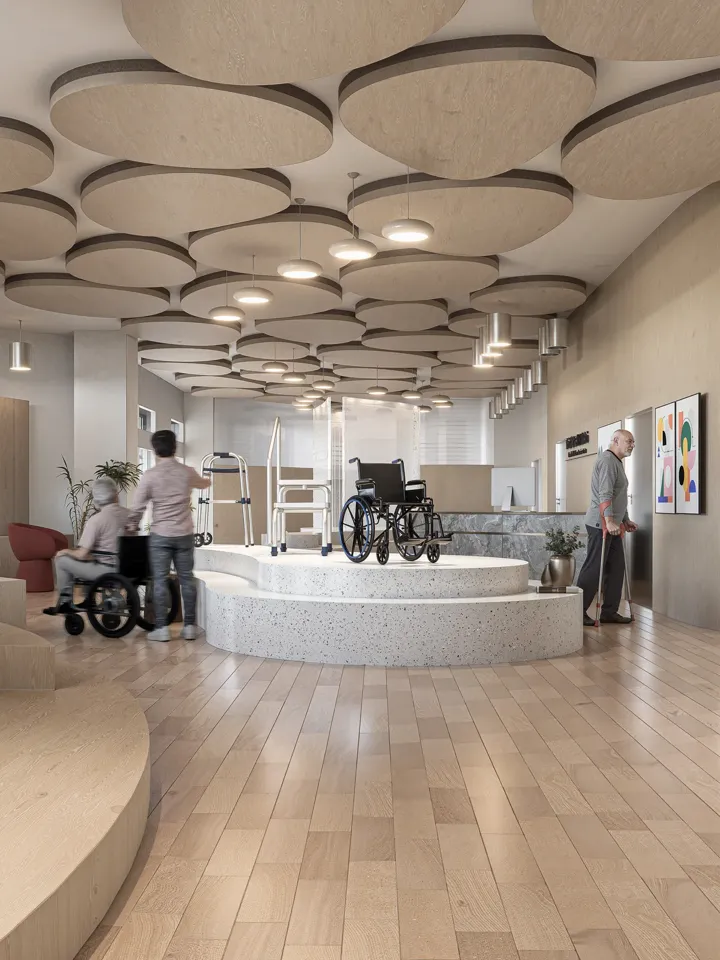
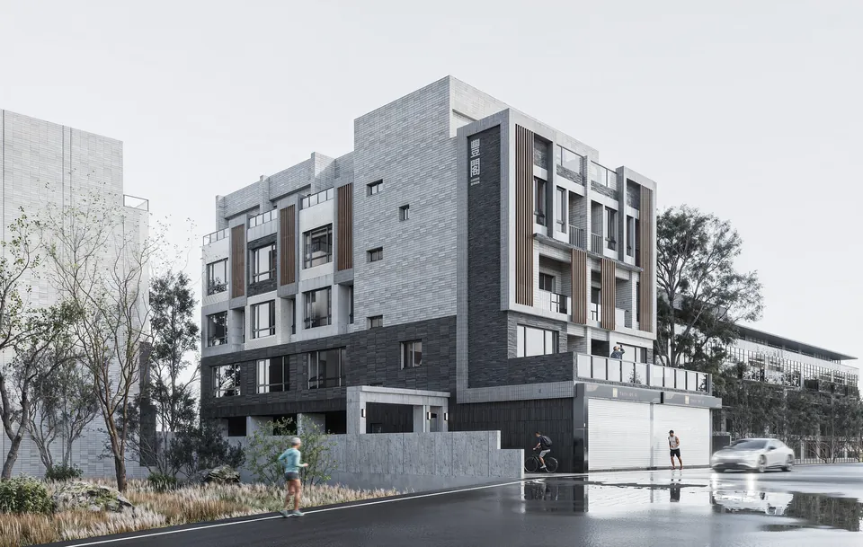
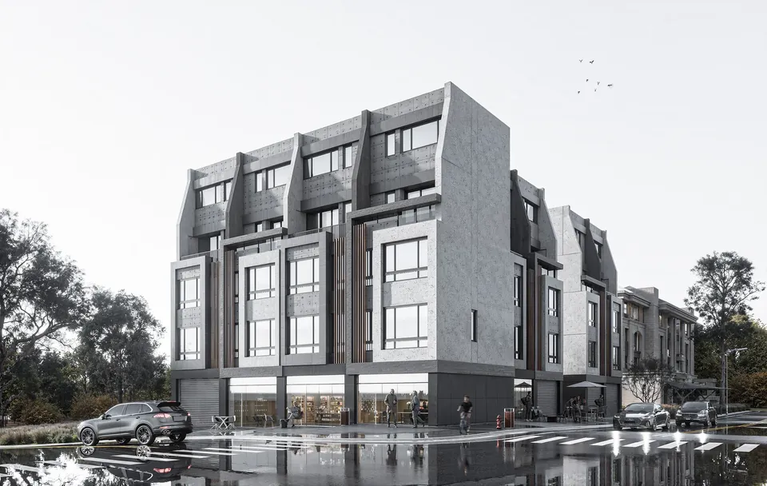
光線、包覆感與尺度，改變人如何在一個地方生活。RSA 想讓這件事變得可以被衡量。
五個步驟，
一個循環。
RSA 期望設計與分析如何相互回饋。這是往後的研究方法，並非宣稱早期作品曾以此方式設計。
- 01觀察
基地、鄰棟、氣候、人與使用情境。
- 02分析
使用適當的模型與資料，並說明假設。
- 03設計
把環境條件導入配置、量體、空間與材料。
- 04檢視
以合適的指標比較方案與環境差異。
- 05改善
保留限制與不確定性，持續修正決策。
研究分析系統不是「能不能算」，
而是「算完之後能不能被使用」。
目前研究聚焦新建住宅的前期決策，以高雄為案例城市。RSA 不取代 Radiance、CFD 或 EnergyPlus，而是研究這類證據如何更早被讀懂與使用。
不同樓層、時間及方案的環境差異，能否被可靠辨識？
技術驗證
Technical
以參考工具交叉比對，檢查遮蔭與計算誤差。
整合後的環境證據，是否比分散資訊更容易判讀？
真實案例驗證
Real cases
稽核高雄基地與周邊高度，控制條件比較 A/B 方案。
這樣的理解，能否支援更好的前期決策？
使用者驗證
Users
相同資料與任務，只改變呈現方式：比較判讀正確率、任務時間與決策理由品質。
原型與核心分析流程
- 基地定位、範圍與周邊量體
- 日照、遮蔭、風向與 UTCI
- 樓層與時間、A/B 方案比較
- 報告與證據輸出
模擬可信度與真實案例
- 太陽／遮蔭參考比對
- 高雄真實基地案例
- 頁面、資料與報告一致性
使用者研究與正式實證
- 權威基地資料串接評估
- 案例資料完整度補強
- 10–15 人使用者 pilot
- 正式理解與決策比較研究
已建置功能仍需持續驗證。狀態依既有系統版本紀錄整理。
陰影 IoU（對照 Radiance）
與 Radiance 直接陰影參考比較之交集聯集比，限該歷史版本與封存案例。
Hausdorff 距離
同一比較設定下的邊界差距；舊資料另記載面積偏差約 −2.05%。限該版本。
回歸測試通過
歷史版本曾記錄通過。不代表新版或所有模組已達科學驗收標準。